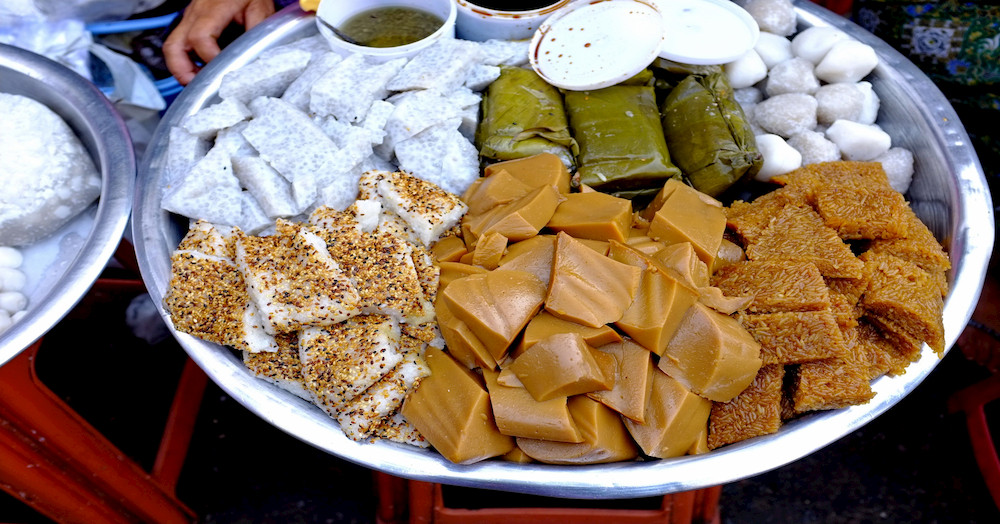
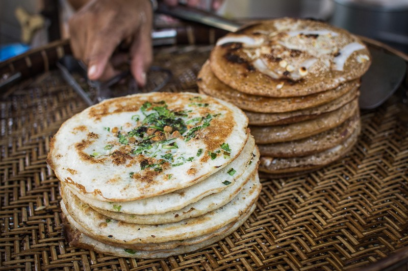

ရခိုင်ရိုးရာ
ခေါက်ဆွဲသုပ်
ခေါက်ဆွဲနှင့်ဟင်းသီးဟင်းရွက်တို့ သုပ်ထားသည့် ရခိုင်ရိုးရာအစားအစာ

ကချင်ရိုးရာ
ကျောက်ပန်းတောင်းပလာတာသုပ်
ကြက်သား၊ ကုလားပဲဟင်း၊ ပလာတာ၊ ဖက်အကြွပ်ကြော်တို့ဖြင့် စားရသော ကချင်ရိုးရာ အစားအစာ

မြန်မာရိုးရာ
မုန့်ပျားသလက်
ကောက်ညှင်း ၊အုန်းသီး၊ မုန့်